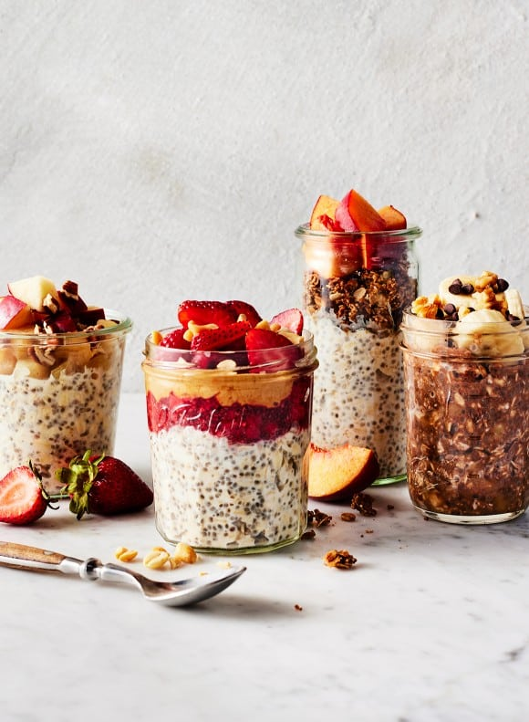

Overnight Oats

Description
When someone asks me for an easy, healthy breakfast idea, this overnight oats recipe is the first thing I suggest. It’s perfect for busy mornings, as you can make individual servings ahead of time and take them on the go. It’s also satisfying enough to keep you full till lunch, made with simple ingredients like oats, chia seeds, and (optional) yogurt. But best of all, it’s fun.
What could be fun about oatmeal, you ask? Well, this yummy breakfast is endlessly customizable. Once you learn how to make overnight oats, you can experiment with mix-ins like cocoa powder or vanilla extract or pile on toppings like nuts, seeds, and fresh fruit. To get you started, I’m sharing four tasty variations (+ my go-to base recipe!) below. Try them out, and then get creative making your overnight oats your own!
Ingredients
- Whole rolled oats – Also known as old fashioned oats. Quick oats and steel-cut oats will NOT work here. Quick oats will be too mushy, while steel-cut oats will be chewy and tough.
- Chia seeds – For extra protein and the perfect thick and creamy texture.
- Almond milk – Or any milk you like! Dairy milk and oat milk both work well. Coconut milk adds rich flavor and yields an especially creamy texture.
- Maple syrup – For sweetness. Honey works too.
- And a pinch of salt – To make the oats extra-flavorful.
Steps
- Place the oats, chia seeds, maple syrup or honey, salt, and yogurt, if using, in a lidded container or jar.
- Pour in the almond milk, and stir thoroughly to combine. Make sure that there are no chia seeds clumped around the bottom or sides of the jar!
- Cover and store overnight, or for up to 5 days, in the fridge.